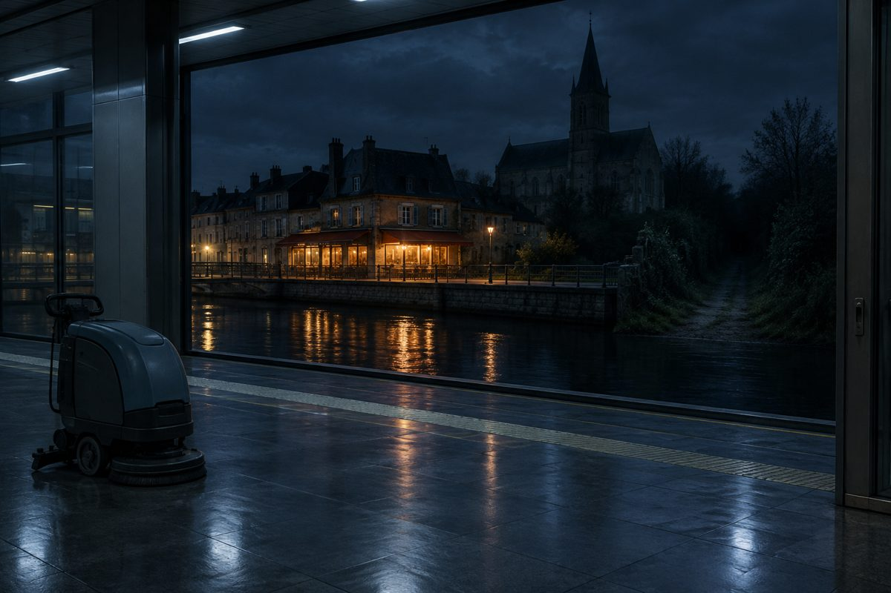

He switches the machine off, which takes a while to stop humming.
You're outside the city, he says, further out than the trains usually bother with. There's a night bus in fifty minutes from the road above. There's a brasserie by the canal that stays open because it never quite decided not to.
Then he says: "Don't take the path behind the church."
He doesn't explain. He switches the machine back on.
Look down the path Head for the canal